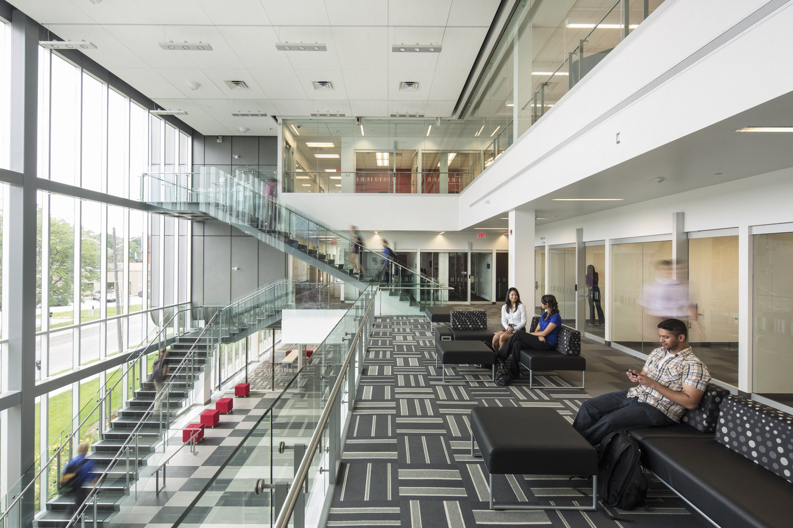

GBDA Survival 101
Table of Contents:
- About Me
- What is Global Business and Digital Arts?
- GBDA vs. ARBUS
- GBDA First Year
- Preparing for Second Year
About Me
Hello! My name is Caitlyn Tan, and I’m a second-year Global Business and Digital Arts (GBDA) student at the University of Waterloo. As I'm coming to the end of my 2A term (Fall 2024), I wanted to create this personal website to share insights about the GBDA program. Back in grade 12, I remember feeling overwhelmed with questions about GBDA’s unique and somewhat ambiguous structure while trying to decide on different universities and programs. Should I choose GBDA or ARBUS? What is Stratford like? What will I actually learn in this program? Does it focus more on arts or business?
These were just some of the questions I had—questions that I later discovered were common among other first-year GBDA students. Drawing from my own experiences, I hope to shed light on these questions and help others who are interested in the program.
What is Global Business and Digital Arts?

Blending creativity, technology, and business, Global Business and Digital Arts is a unique program that is only offered at the University of Waterloo. Through a combination of hands-on projects, access to the latest digital technologies, and co-op work terms, students are given many opportunities to develop, improve, and experiment with their skills. This program provides students with a well-rounded and diverse skill set needed to thrive in today's fast-evolving world. GBDA is perfect for those who have a passion for graphic designing, web developing, marketing, film, or even animation.
GBDA vs. ARBUS
Many students interested in both business and the arts often find themselves deciding between Arts and Business (ARBUS) and Global Business and Digital Arts (GBDA). ARBUS offers more flexibility, allowing students to tailor their education through various majors that can help if they want to lean towards more business or arts. Because of this, you tend to meet a wider range of students who pursue different majors and specialization. In contrast, GBDA upper-year schedules primarily consist of GBDA courses, meaning you'll frequently see familiar faces in your classes. Additionally, ARBUS classes are based entirely in Waterloo, avoiding the need to commute to Stratford.
On the other hand, GBDA provides unique resources and opportunities, making it a strong choice for students looking to build impressive portfolios or resumes. The program’s focus on practical, project-based learning is one reason why GBDA students typically begin their co-op terms in third year, unlike most other co-op programs that start co-op in the first or second year. Stratford’s campus also gives GBDA students access to high-quality equipment, such as cameras, tripods, audio kits, and ring lights, which they can rent out to use for their projects.
Ultimately, both programs offer valuable courses and experiences, so it’s important to carefully research and consider your goals when choosing between them.
The following table compares the GBDA and ARBUS First Year Schedules:
| Fall Term | Winter Term | Fall Term | Winter Term |
|---|---|---|---|
| ARTS 130 or ARTS 140 | ARTS 130 or ARTS 140 | ARBUS 101 | ARBUS 102 |
| CS 105 | CS 106 | ECON 101 | ARBUS 202 |
| Language course | Language course | Two courses in your potential major(s) | Two courses in your potential major(s) |
| Elective or GBDA 101 | Elective or GBDA 101 | Two courses in your potential major(s) | Two courses in your potential major(s) |
| Elective | ECON 101 | Arts First requirement or elective | Arts First requirement or elective |
GBDA First Year
Stratford
Stratford is often a mystery to many high school students exploring the GBDA program. In short, GBDA courses, unlike other programs at Waterloo, are taught at the Stratford campus rather than the main campus. This understandably raises concerns, with many students wondering, “How am I supposed to get to Stratford?” For first-year GBDA students, the university provides a coach bus that runs exclusively on Fridays (the designated day for first-year GBDA students). The bus departs promptly on Friday mornings, with one picking up students behind CMH and another near V1, though these locations might change in future years. After departing at 8:00 AM, the ride takes approximately 40 minutes. At 4:00 PM, the bus returns to bring students back to Waterloo. Alternatively, students with access to a car can choose to carpool with friends instead of taking the bus.
CS 105/106
CS 105 and CS 106 are often among the more tedious courses for GBDA first-years, as most students enter the program with little to no prior knowledge or interest in JavaScript or coding in general. Both courses are online, but this doesn’t make them easier to cheat or slack off. CS 105 includes weekly online quizzes, assignments, modules with short exercises, a final project, and an in-person exam. Similarly, CS 106 involves weekly labs, assignments, an online midterm, a final project, and a final in-person exam. While the content can be fun and useful to learn, the challenges often come from the workload and the lack of enthusiasm for coding among many GBDA students. With numerous weekly deliverables, it’s crucial to stay organized and manage your time effectively, especially while juggling the demands of other courses. My advice? Focus on keeping up with the work, aim to pass, and move on—you definitely don’t want to retake these courses in future years.
Language Courses
In first year, GBDA students are required to take two language courses—one in the Fall term and another in the Winter term. The language courses you can choose from consist of the following: ARABIC, CHINA, CROAT, DUTCH, FR, GER, GRK, ITAL, KOREA, LAT, MOHAWK, PORT, RUSS, and SPAIN. You don’t need to pick the same language for both terms. When choosing your courses, it’s important to consider both your interest in the language and the course structure. While it’s always a good idea to choose a language you’re genuinely interested in, keep in mind that different courses may have different assessments. For example, when I took KOREA 101 and 102, these courses included two quizzes and two midterms. On the other hand, my friends who took CHINA courses had an oral and written exam as part of their evaluations. If you have strong preferences over a single, heavy-weighted final exam over multiple midterms, or vice versa, this might influence your decision. These are just a few things to consider when selecting your language courses.
Arts 130/140
In your first year of GBDA, you’ll be required to take ARTS 130 and ARTS 140, but you can’t take them in the same term. For instance, if you enroll in ARTS 140 during the Fall term, you’ll need to take ARTS 130 in the Winter term. Both courses offer a wide range of interesting and unique subjects, such as video games, colour theory, conspiracy theories, Disney, social justice, and more. Because of this, you and another student who are both taking ARTS 130 in the same term might not be in the same class. It all depends on whether you two choose the same topic.
In my case, I chose Myths of Sex and Love for ARTS 140 in the Fall term and What Do Games Mean? for ARTS 130 in the Winter term. Both were enjoyable and engaging, but they did involve a bit heavy amount of writing, which is typical for many ARTS 130 and 140 topics. To prepare, I recommend making a list of your preferred topics since course selection for ARTS 130/140 operates on a first-come, first-served basis. It’s also helpful to research the class times and locations to ensure they fit well with your schedule.
Electives
In your first year, you’ll have two electives, giving you the opportunity to take classes outside your program requirements. This is a great time to start thinking about whether you want to pursue a minor, as you can begin taking the required courses early on. If you’re not planning to complete a minor or specialize in an area that requires specific courses, feel free to choose classes that simply interest you while earning your credits. Some students opt for “bird courses”—classes known for being relatively easy and having lighter workloads—to help balance their schedules more effectively.
GBDA 101
GBDA 101 is held at Stratford on Fridays and is the only GBDA course that first-years will take. You can choose to take it in either the Fall or Winter term, depending on your preference. Personally, I took GBDA 101 in the Fall to avoid commuting to Stratford during the cold Winter. The course is somewhat similar to high school communications technology classes, as it involves working with Adobe software like Photoshop and Illustrator to design logos, create posters, and edit projects.
ECON 101
In Winter term, GBDA first-year students take ECON 101, which includes two midterms, a group project, and a final exam. This course has a dedicated section for GBDA students, so your classmates will all be part of the same program. If you’ve taken economics in high school, much of the content may feel familiar, but don’t worry if you’re new to the subject or if you forgot all about high school economics—this is an introductory course. While some concepts can be challenging to grasp quickly and the material might feel dull at times, the midterms and exam are primarily multiple-choice, so you won’t need to be a complete expert to do well.
Congratulations! You survived first year!
Preparing for Second Year
Similar to GBDA 101, most GBDA courses are three-hour lectures, though some professors may end class early or use part of the time as a work period. In second year, all your required courses will be GBDA-specific, meaning you’ll be commuting to Stratford several times a week, except for any electives you choose. While it is logical and cheaper to live in Stratford, most GBDA students opt to stay in Waterloo. I have to say that student life is much more lively and exciting on the main campus, with a larger community, more events, and opportunities to connect with friends outside of the GBDA program.
For transportation, the school provides yellow school buses for commuting, replacing the coach buses from first year. GBDA students must purchase a Stratford bus pass, which costs around $175 per term, but prices may change in later years. Although WatCards aren’t always checked to confirm if you've bought a pass, it’s better to have purchased one to avoid any issues. Buses typically pick up and drop off students at the Davis Centre (DC) Library, but this location and the schedule may vary for your year. For the most accurate information, check the university's Transportation to/from Kitchener-Waterloo schedule. Again, if you or a friend has access to a car, carpooling to Stratford is always an option.
The GBDA advisors will email you details about the second-year GBDA courses available to choose from. A helpful tip is to be mindful of the class times for each course. With careful planning, you can arrange your schedule to minimize commuting, often reducing trips to Stratford to just 2-3 times a week. This can result in having 1-3 days a week with no classes—a perk of the program that many non-GBDA friends are often envious of. These free days are intentional, providing GBDA students with ample time to focus on the creative projects frequently assigned in the program.
When selecting your electives, keep in mind the 40-minute commute to and from Stratford. It’s essential to avoid scheduling an elective immediately before or after your GBDA classes to prevent conflicts. One challenge of having courses at Stratford is that it can sometimes interfere with the timing of other courses you’re interested in. To avoid this, I personally choose electives that offer the course online. They offer greater flexibility and eliminate the stress of potential scheduling conflicts.